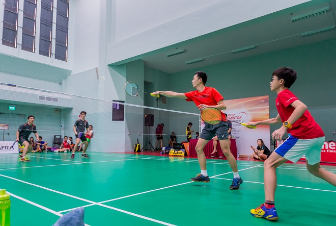
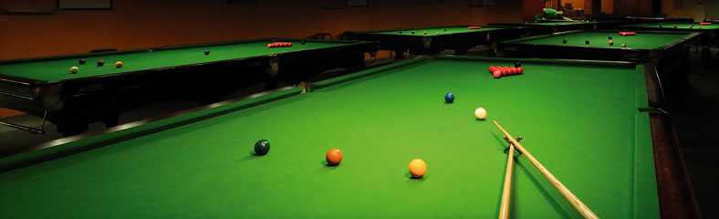
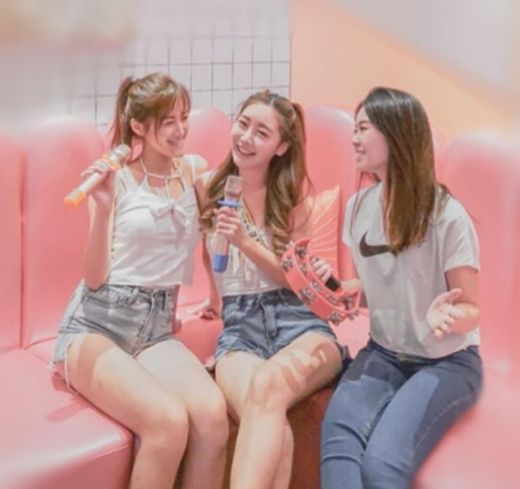
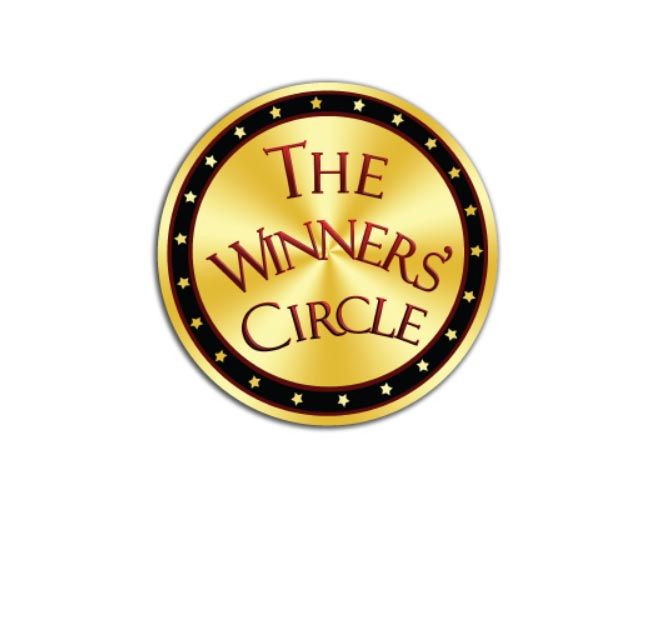
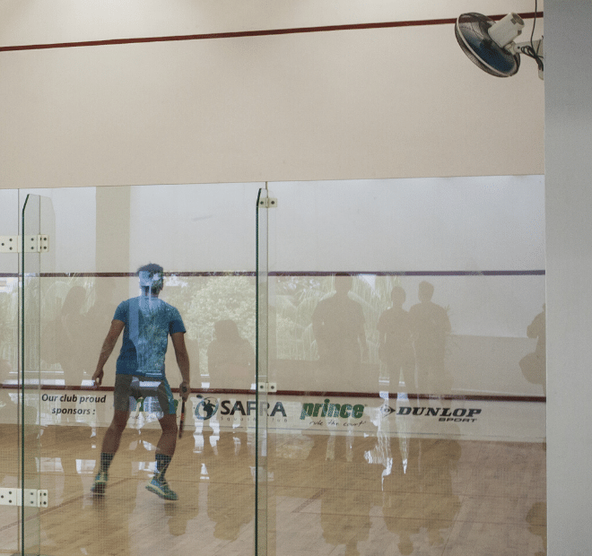
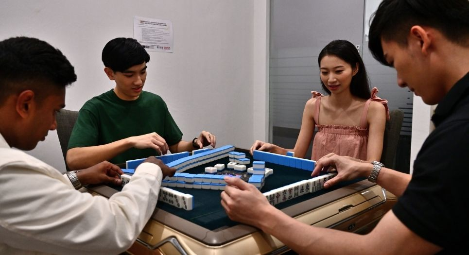

Sports and Games
Explore the variety of entertainment venues at Toa Payoh SAFRA! We are sure to have something that appeals to you!

Indoor Badminton Court
Open daily: 7am to 1am (next day)
Call us: 6259 4000
A hall for all purpose!
Looking for some speed, agility and power? Sweat it out in a game of badminton. Book here.
Learn more

Lagoon Billiard Room
Open Mon to Sun, 10.00am to 6.00am
Call us: 6259 1019
Take your cue and put your hand-eye coordination and accuracy to the test in a game of billiards. This
new centre boasts 9 high standard international snooker tables and 8 American pool tables. We’re also
equipped to host tournaments in our tournament hall complete with seating gallery.
Learn more
 SuperBowl
SuperBowl
Open Mon - Thu: 12pm - 12am
Fri & Eve of Public Holiday: 12pm - 1am
Sat: 10am - 1am
Sun & Public Holiday: 10am - 12am
Call us: 6253 3395
Strike your boredom away. At SuperBowl, we’ve got lanes of fun for everyone. Bowling not only builds
muscle strength and hand-eye coordination but is also easily picked up by all. SuperBowl also organises
events such as corporate tournaments, in-house leagues and birthday parties! Don’t know how to bowl
or want to skill up? Ask us about coaching too!
Learn more

HaveFun Karaoke
Open Fri - Sun: 5pm to 2am (Next Day)
Call us: 6261 3565
Exercise your vocals and take your turn in the spotlight at HaveFun Karaoke, SAFRA Toa Payoh!
Ideal for after-work hangs and squad gatherings, HaveFun Karaoke boasts of private themed karaoke
suites and a comprehensive song collection of over 200,000 songs in different languages. It also offers
an expansive selection of delectable snacks and beverages to satisfy the hungry and thirsty. Engage in
other fun activities such as snooker and darts, for an unforgettable VIP Karaoke experience for every
reveller in the heartlands.
HaveFun Karaoke is a multifaceted entertainment zone suitable for all ages.
Play, sing and have fun!
Learn more
 EnergyOne Gym
EnergyOne Gym
Open daily: 6.30am - 10.30pm (Next Day)
Call us: 6355 4560
Offering the best of resistance training equipment and cardio machines, EnergyOne Gyms also come
equipped with free weights, personal training and spacious changing rooms. What's more, SAFRA
members can cross train in other sports facilities located within our SAFRA clubs! Ask about fitness
assessments & consultations, and corporate services. Our personal training services are also highly
effective and our personal trainers are qualified fitness professionals who specialise in various areas,
such as weight management, injury rehabilitation, sports specifics and nutrition.
Find out more about our gyms here!
Kidz Amaze
Open Monday to Friday 1:00pm – 7:00pm
Saturday amd Sunday: 11:00am – 7:00pm
Call us: 6355 4550
Treat your kids to one of Singapore’s largest indoor playground! Enjoy the wonder of play at one of
Singapore's largest indoor playground!
Learn more
 Swimming Pools
Swimming Pools
Open Mon - Tue, Thur - Fri: 7am - 9.30pm
Wed: 11am - 9.30pm
Sat - Sun, Public Holiday: 8am - 9.30am
Call us: 6259 4000
Have a splashing good time! Our swimming pools are highly popular with members and guests for
swimming laps, swimming classes or just chilling out in the sun or playing in our wading pools.
Learn more

The Winners’ Circle
Open daily: 10am - 11pm
Call us: 6259 4000
Slot Machines Room at Toa Payoh SAFRA
You must be 21 years and above to enter The Winners’ Circle.
For those under 21 years, find out more here.
Learn more

Indoor Squash Courts
Open daily: 7am - 1am (next day)
Call us: 6259 4000
An indoor court at Toa Payoh SAFRA for Squash!
Click here to book your court!
Learn more

Games Room @ Toa Payoh
Open daily: 10am - 11pm
Call us: 6259 4000
What’s your game? Whether it’s mahjong, poker or blackjack, play with friends and family in the
comfort of our Games Room!
Click here for SAFRA Toa Payoh Games Room Rules.
Learn more